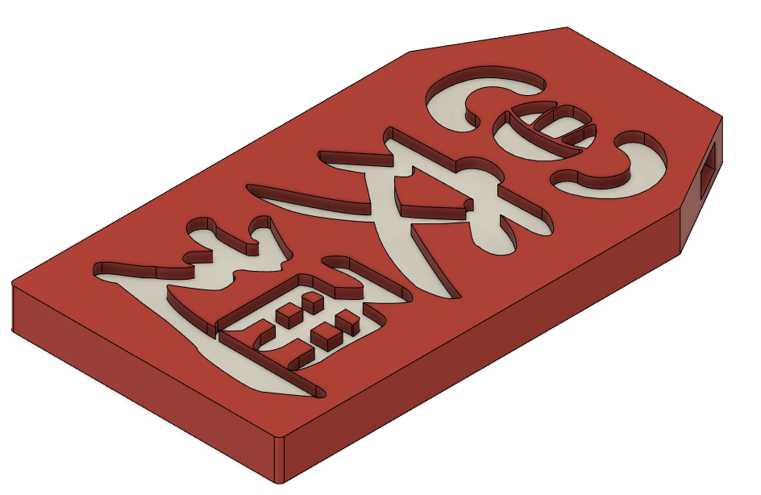

Minamoto Kou Traffic Safety Earring Keychain
Model Description
This was the first of the many 3D printed keychains I've made. This was also made to practice my 3D modeling skills.
This is based off of Toilet-Bound Hanako-kun's Minamoto Kou, a young exorcist from a renowned exorcist clan who seems to not be very good at getting rid of spirits. He wears a traffic safety omamori as an earring.

This project was made primarily using extrusions, chamfers, and embosses. Here's a photo of my own very well-loved keychain:

3D Printer Settings
Maximum length: 5cm
Maximum width: 3.5cm
Maximum Thickness: .4cm
Has a rectangular hole measuring .327cm x .24cm. Single print. Intended to fit on a 220x220x220mm base plate.
Here were my 3D printer settings:
3D printer: Creality Ender 3 Pro
Slicer: Ultimaker Cura
Filament type: PLA
Layer Height: .2mm
Wall/Top/Bottom Thickness: .8mm
Infill: 20%
Printing Temp: 200 degrees C
Base Plate Temp: 60 degrees C